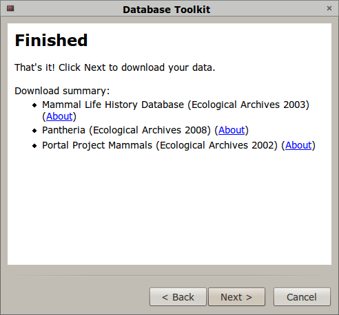

A windows executable is provided. Simply download and run dbtk.exe.
For Debian-based Linux distributions (including Ubuntu), a Debian package, python-dbtk_x.y-1_all.deb, is provided.
To install the Database Toolkit from source, you'll need Python 2.6 with the following packages installed:
The following packages are optional:
To install from source:
| 1. Click "Next" on the first page to continue. | |
|
2. Select your database from the list. Leave the boxes checked to allow the Database Toolkit to store downloaded data and use it next time, to avoid having to download the same file more than once. The default data file directory will put the raw data files in your current working directory, in a new folder called raw_data. The {dataset} at the end means that separate folders will be used for each dataset (recommended). |
|
| 3. Enter your database connection information. | |
| 4. Select the datasets you would like to download. | |
|  |
5. Check your download summary. You can click on the "About" links to open a website with information about the selected dataset. Pressing "Next" will begin the download. |
| Your download will proceed and progress will be displayed on this screen. You can press "Cancel" at any time to quit. When all datasets have been downloaded, the Finish button will become active. |